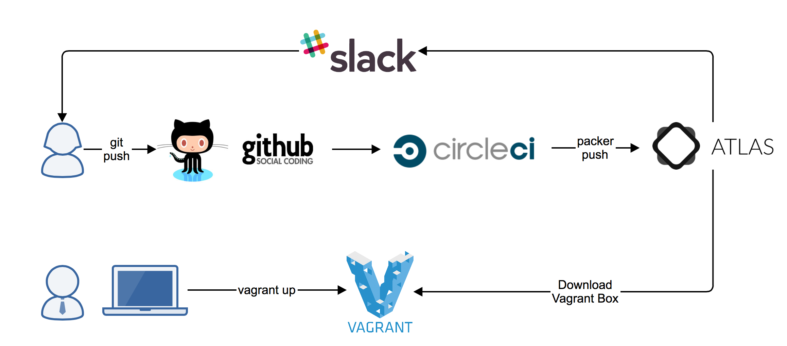
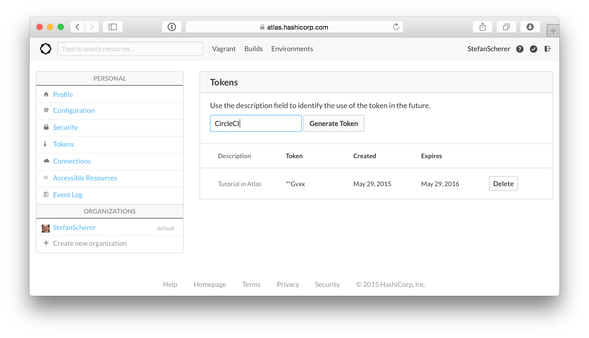
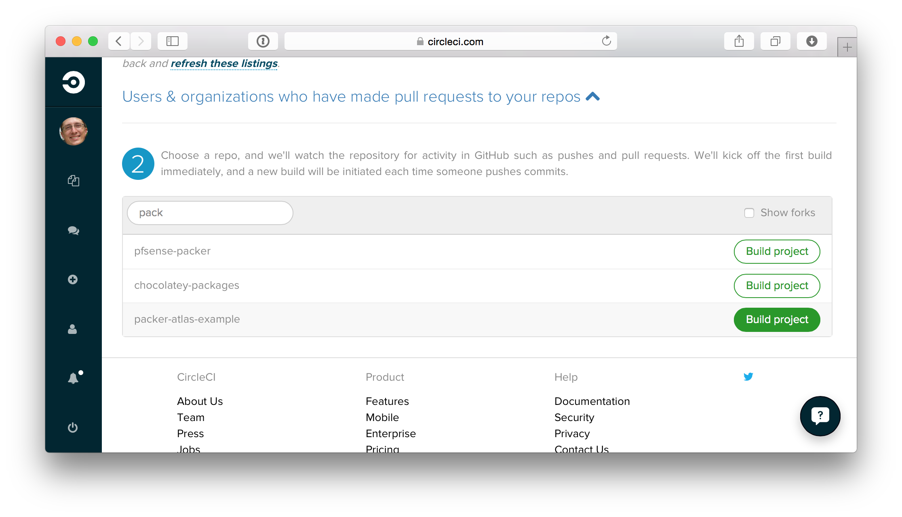
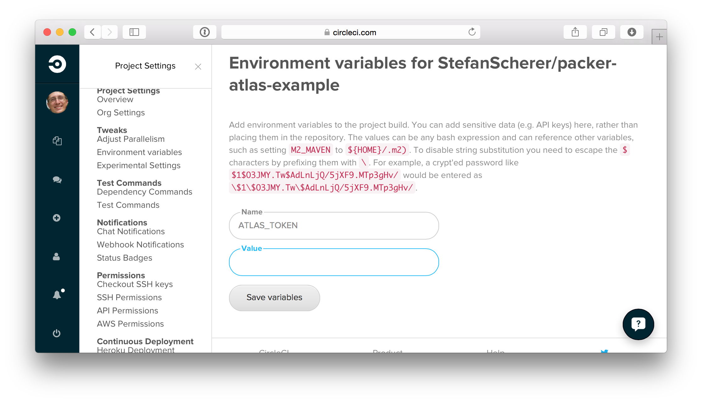
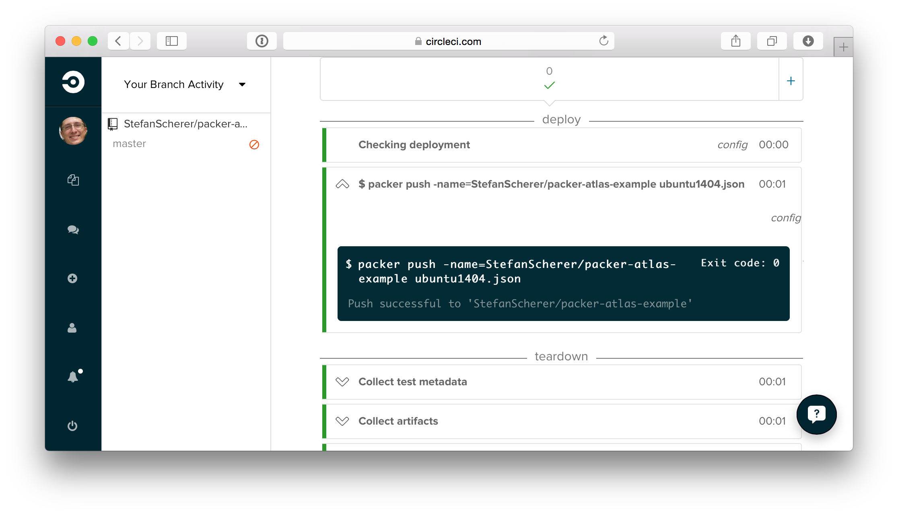
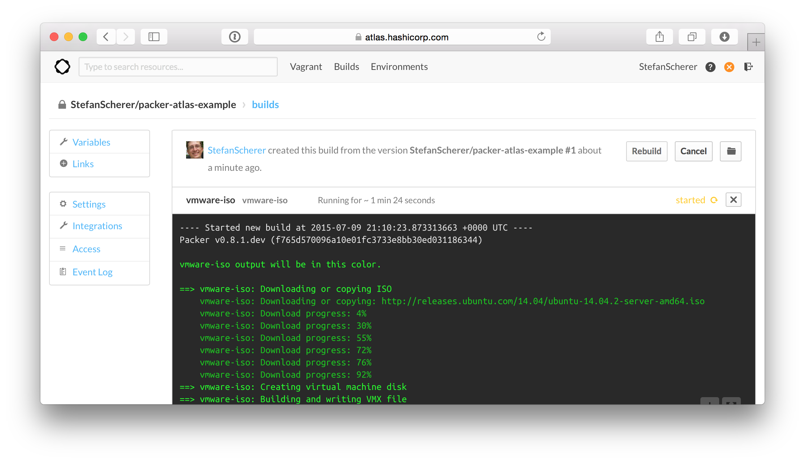

Git push to build Vagrant Boxes with Atlas
Today I have tested the new available service Atlas to build Vagrant Boxes with Packer in the Cloud.
As the time of writing there is no direct GitHub integration for Atlas. So I just added another CI server as a glue between GitHub and Atlas to make it work. For this example I used CircleCI. And I love to receive Slack notifications of this build pipeline.
This is my current workflow

GitHub repo
For this blog post I have created an example repo with an Ubuntu 14.04 packer template from the boxcutter Team.
Atlas
Sign up at Atlas and create a Token for CircleCI

CircleCI
Sign up at CircleCI and add the GitHub project with your packer template as a build project.

Now go to the project settings and add an environment variable ATLAS_TOKEN with the Token that we have generated in Atlas.

Now the connection between GitHub and CircleCI and Atlas is established.
git push
After each git push CircleCI builds the project. It downloads and installs Packer 0.8.1 and starts packer push
This is the circle.yml used in this example.
machine:
timezone: Europe/Berlin
environment:
PACKER_VERSION: 0.8.1
dependencies:
pre:
- >
sudo apt-get install -qq wget unzip &&
sudo mkdir /opt/packer &&
pushd /opt/packer &&
echo "Downloading packer ${PACKER_VERSION}..." &&
sudo wget --no-verbose https://dl.bintray.com/mitchellh/packer/packer_${PACKER_VERSION}_linux_amd64.zip &&
echo "Installing packer ${PACKER_VERSION}..." &&
sudo unzip packer_${PACKER_VERSION}_linux_amd64.zip &&
sudo rm packer_${PACKER_VERSION}_linux_amd64.zip &&
pushd /usr/bin &&
sudo ln -s /opt/packer/* .
deployment:
publish:
branch: master
commands:
- packer push -name=StefanScherer/packer-atlas-example packer-atlas-example.json

This will just upload the packer template and files into Atlas. In Atlas the main work begins. A parallel build of the Vagrant Box for VMware and VirtualBox is started.

The deployment to Atlas is configured in the Packer template in the post-processor section.
"post-processors": [
[
{
"type": "vagrant",
"keep_input_artifact": false
},
{
"type": "atlas",
"only": ["vmware-iso"],
"artifact": "StefanScherer/packer-atlas-example",
"artifact_type": "vagrant.box",
"metadata": {
"provider": "vmware_desktop",
"version": "{{ user `version` }}",
"created_at": "{{timestamp}}"
}
},
{
"type": "atlas",
"only": ["virtualbox-iso"],
"artifact": "StefanScherer/packer-atlas-example",
"artifact_type": "vagrant.box",
"metadata": {
"provider": "virtualbox",
"version": "{{ user `version` }}",
"created_at": "{{timestamp}}"
}
}
]
After a while the Vagrant Boxes are deployed to Atlas and are available for your Vagrantfile.
Vagrant up
You now can use the new Vagrant Box with
vagrant init StefanScherer/packer-atlas-example
vagrant up
Thanks to Hashicorp for that great service!
See also
https://www.hashicorp.com/blog/atlas-packer-vagrant.html
I hope you enjoyed this blog post.